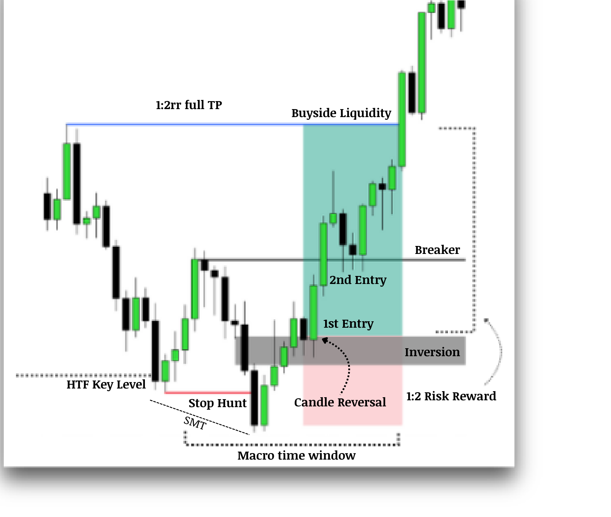
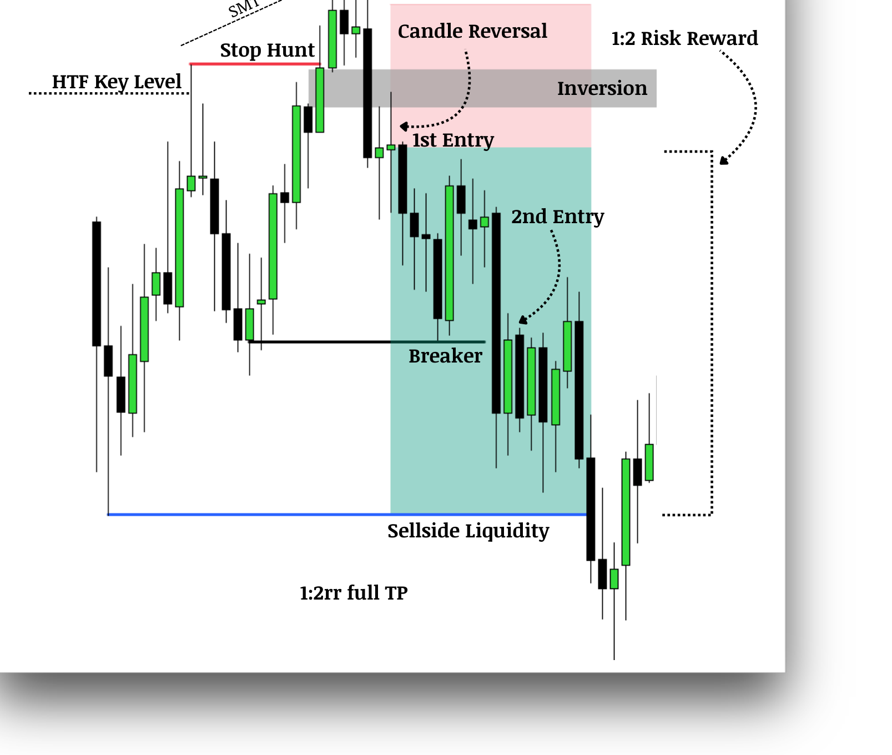

L'Order Flow correspond à la façon dont les ordres d'achat et de vente se déplacent sur le marché et influencent le price action. Il permet de comprendre qui contrôle le marché (acheteurs ou vendeurs).
Order flow = tendance du marché, mais avec un focus plus profond sur la manière dont le prix bouge et où la liquidité est positionnée.
L'order flow te permet de déterminer qui est aux commandes du marché, ce qui te permet de trader dans le sens de la TENDANCE.
Si tu trades contre l'order flow d'une time frame supérieure, tu te fais broyer la plupart du temps. La HTF dicte la tendance principale.
Si le NQ fait des higher highs avec des bougies de displacement propres et des FVG bullish respectées, l'order flow est bullish — et tu cherches des achats sur les niveaux clés (FVG, breakers).
Le marché ne bouge pas au hasard.
Les niveaux clés sont les zones où les institutions et les gros traders achètent et vendent.
Ces niveaux agissent comme support et résistance et influencent les mouvements de prix.
Le prix réagit fortement sur ces niveaux clés, ce qui signale des potentiels reversals, des continuations de tendance ou des points de réaction.
Les fenêtres macro fournissent des mouvements de prix plus puissants et des confirmations plus fiables.
Dans ce modèle, les setups se forment majoritairement dans la fenêtre macro, mais ils peuvent parfois apparaître en dehors.
Un Stop Hunt est un mouvement de prix stratégique — souvent un spike brutal — qui vient cibler les zones où les traders retail placent classiquement leurs stop-loss, juste au-dessus d'une résistance ou en dessous d'un support.
Une fois ces stops déclenchés, le prix retourne souvent dans l'autre sens, ce qui montre que le mouvement avait pour but de capturer la liquidité, pas de continuer la tendance.
Cette tactique est utilisée par les acteurs institutionnels pour exécuter de gros volumes avec un slippage minimal.
C'est tout simplement un Liquidity Sweep en lower time frame.
Le Draw on Liquidity (DOL) est le côté du marché que l'algorithme cherche à atteindre — soit la liquidité buy-side, soit la sell-side.
Regarde :
Le Draw on Liquidity te donne la cible directionnelle. Tu ne cherches pas juste une entrée — tu vises l'endroit où le Smart Money veut amener le prix.

Quand une bougie clôture au-dessus du high de l'IFVG ou du Breaker, attends un retournement sur la bougie suivante.
Pas besoin que la deuxième bougie clôture — tu peux exécuter sur la même bougie.

Quand une bougie clôture en dessous du low de l'IFVG ou du Breaker, attends un retournement sur la bougie suivante.
Pas besoin que la deuxième bougie clôture — tu peux exécuter sur la même bougie.